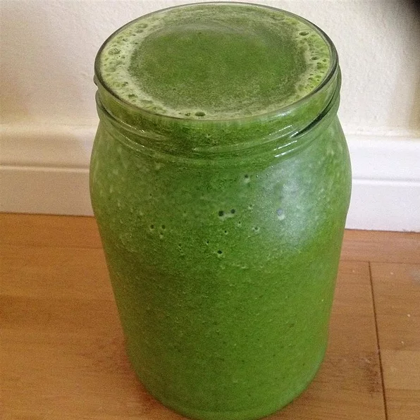

Tropical Smoothie

Refreshing Tropical Smoothie with Spinach
This Smoothie makes the perfect mid-day snack on a warm
day, or a healthy breakfast. It is made with all fresh
ingredients and has spinach added for an extra health
kick, without comprimising on taste. Everyone is sure
to enjoy the creamy and naturally sweet taste of fresh
tropical fruits in this classic smoothie recipe.
Ingredients
- 1 1/2 cup fresh pineapple
- 1 bannana
- 1 cup baby spinach
- 3/4 cup coconut milk
- 1 cup papaya
- 1 cup ice
Steps
- Peel, deseed, and chop the fresh fruit
- Add all ingredients into blender
- Blend until well mixed and creamy
- Pour into tropical glasses with little umbrellas, sip by pool and enjoy!